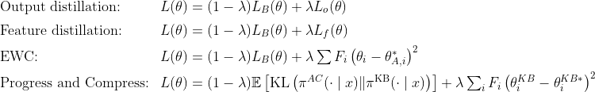
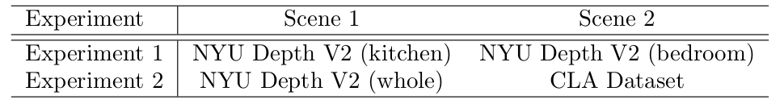

{{ page.title }}
|
Abstract
Continual learning is of great importance for autonomous agents since it is
impossible to provide the artificial intelligent with all the knowledge it
need in the real world. While previous work has proposed a large amount of
continual learning methods, little research has been done on the segmentation
task. For autonomous mobile robots, the differentiation of foreground and
background matters a lot for the safety consideration. Therefore, we aim to
solve the continual learning for binary foreground and background segmentation task.
To mitigate catastrophic forgetting, the biggest problem of continual learning,
we totally implement five continual learning methods including fine-tuning
(baseline), output distillation, feature distillation, EWC and Progress & Compress.
Apart from the naive fine-tuning, the last four methods all adopt techniques to
preserve the old knowledge. The first three add regularization terms on the output
space, feature space and weight space respectively. The last one reuses the old
parameters with a layerwise lateral connection in the model architecture. We evaluate
and compare those methods on NYU and CLA dataset of different types of scene.
The result demonstrates that continual learning methods can prevent catastrophic
forgetting to a certain degree only when the old scene and new scene are similar.
When two scenes differ a lot, the regularization-based methods may not be a good choice.
|
Thesis: [PDF] Code: [GitHub]
|
Pipeline of methods

Experiment Results

|